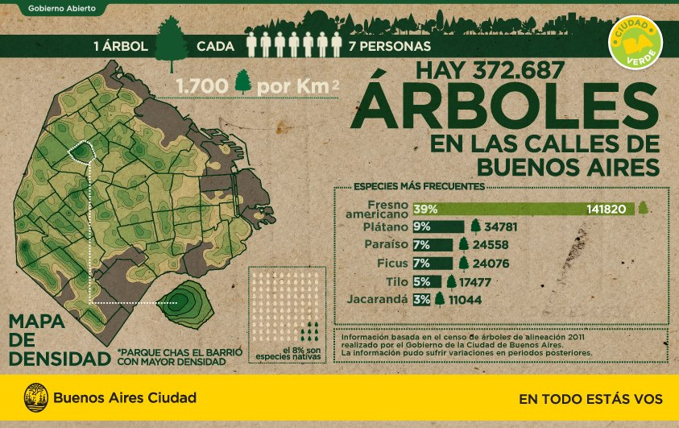

Contenidos | Anterior (5 Impresión con formato) | Próximo (7 Cierre de la clase)
3.6 Arbolado porteño
En esta sección haremos algunos ejercicios que integran los conceptos aprendidos en las clases anteriores. Vamos a manejar archivos, diccionarios, listas, contadores y el comando zip, entre otras cosas. Entregá lo que puedas hacer.
Ejercicios
Vamos a repasar las herramientas que vimos en esta clase aplicándolas a una base de datos sobre árboles en parques de la Ciudad de Buenos Aires. Para empezar, descargá el archivo CSV de "Arbolado en espacios verdes" en tu carpeta Data. Vamos a estudiar esta base de datos y responder algunas preguntas. Guardá los ejercicios de esta sección en un archivo arboles.py.

Descripción de la base
| Título de la columna | Tipo de dato | Descripción |
|---|---|---|
| long | Número flotante (float) | Coordenadas para geolocalización |
| lat | Número flotante (float) | Coordenadas para geolocalización |
| id_arbol | Número entero (integer) | Identificador único del árbol |
| altura_tot | Número entero (integer) | Altura del árbol (m) |
| diametro | Número entero (integer) | Diámetro del árbol (cm) |
| inclinacio | Número entero (integer) | Inclinación del árbol (grados) |
| id_especie | Número entero (integer) | Identificador de la especie |
| nombre_com | Texto (string) | Nombre común del árbol |
| nombre_cie | Texto (string) | Nombre científico del árbol |
| tipo_folla | Texto (string) | Tipo de follaje del árbol |
| espacio_ve | Texto (string) | Nombre del espacio verde |
| ubicacion | Texto (string) | Dirección del espacio verde |
| nombre_fam | Texto (string) | Nombre de la familia del árbol |
| nombre_gen | Texto (string) | Nombre del género del árbol |
| origen | Texto (string) | Origen del árbol |
| coord_x | Número flotante (float) | Coordenadas para localización |
| coord_y | Número flotante (float) | Coordenadas para localización |
Ejercicio 3.18: Lectura de los árboles de un parque
Definí una función leer_parque(nombre_archivo, parque) que abra el archivo indicado y devuelva una lista de diccionarios con la información del parque especificado. La función debe devolver, en una lista un diccionario con todos los datos por cada árbol del parque elegido (recordá que cada fila del csv es un árbol).
Sugerencia: basate en la función leer_camion() y usá también el comando zip como hiciste en el Ejercicio 3.9 para combinar el encabezado del archivo con los datos de cada fila. Inicialmente no te preocupes por los tipos de datos de cada columna, pero cuando empieces a operar con una columna modificá esta función para que ese dato sea del tipo adecuado para operar.
Observación: La columna que indica el nombre del parque en el que se encuentra el árbol se llama 'espacio_ve' en el archivo CSV.
Probá con el parque "GENERAL PAZ" para tener un ejemplo de trabajo, debería darte una lista con 690 árboles.
Ejercicio 3.19: Determinar las especies en un parque
Escribí una función especies(lista_arboles) que tome una lista de árboles como la generada en el ejercicio anterior y devuelva el conjunto de especies (la columna 'nombre_com' del archivo) que figuran en la lista.
Sugerencia: Usá el comando set como en la Sección 2.4.
Ejercicio 3.20: Contar ejemplares por especie
Usando contadores como en el Ejercicio 3.11, escribí una función contar_ejemplares(lista_arboles) que, dada una lista como la que generada con leer_parque(), devuelva un diccionario en el que las especies (recordá, es la columna 'nombre_com' del archivo) sean las claves y tengan como valores asociados la cantidad de ejemplares en esa especie en la lista dada.
Luego, combiná esta función con leer_parque() y con el método most_common() para informar las cinco especies más frecuentes en cada uno de los siguientes parques:
- 'GENERAL PAZ'
- 'ANDES, LOS'
- 'CENTENARIO'
Resultados de cantidad por especie en tres parques:
| General Paz | Los Andes | Centenario |
|---|---|---|
| Casuarina: 97 | Jacarandá: 117 | Plátano: 137 |
| Tipa blanca: 54 | Tipa blanca: 28 | Jacarandá: 45 |
| Eucalipto: 49 | Ciprés: 21 | Tipa blanca: 42 |
| Palo borracho rosado: 44 | Palo borracho rosado: 18 | Palo borracho rosado: 41 |
| Fenix: 40 | Lapacho: 12 | Fresno americano: 38 |
Ejercicio 3.21: Alturas de una especie en una lista
Escribí una función obtener_alturas(lista_arboles, especie) que, dada una lista de árboles como la anterior y una especie de árbol (un valor de la columna 'nombre_com' del archivo), devuelva una lista con las alturas (columna 'altura_tot') de los ejemplares de esa especie en la lista.
Observación: Acá sí, fijate de devolver las alturas como números (de punto flotante) y no como cadenas de caracteres. Podés hacer esto modificando leer_parque.
Usala para calcular la altura promedio y altura máxima de los 'Jacarandá' en los tres parques mencionados.
Resultados de alturas de Jacarandás en tres parques:
| Medida | General Paz | Los Andes | Centenario |
|---|---|---|---|
| max | 16.0 | 25.0 | 18.0 |
| prom | 10.2 | 10.54 | 8.96 |
Ejercicio 3.22: Inclinaciones por especie de una lista
Escribí una función obtener_inclinaciones(lista_arboles, especie) que, dada una especie de árbol y una lista de árboles como la anterior, devuelva una lista con las inclinaciones (columna 'inclinacio') de los ejemplares de esa especie.
Ejercicio 3.23: Especie con el ejemplar más inclinado
Combinando la función especies() con obtener_inclinaciones() escribí una función especimen_mas_inclinado(lista_arboles) que, dada una lista de árboles devuelva la especie que tiene el ejemplar más inclinado y su inclinación.
Correlo para los tres parques mencionados anteriormente.
Resultados. Deberías obtener, por ejemplo, que en el Parque Centenario hay un Falso Guayabo inclinado 80 grados.
Ejercicio 3.24: Especie más inclinada en promedio
Volvé a combinar las funciones anteriores para escribir la función especie_promedio_mas_inclinada(lista_arboles) que, dada una lista de árboles devuelva la especie que en promedio tiene la mayor inclinación y el promedio calculado..
Resultados. Deberías obtener, por ejemplo, que los Álamos Plateados del Parque Los Andes tiene un promedio de inclinación de 25 grados.
Preguntas extras: ¿Qué habría que cambiar para obtener la especie con un ejemplar más inclinado de toda la ciudad y no solo de un parque? ¿Podrías dar la latitud y longitud de ese ejemplar? ¿Y dónde se encuentra (lat,lon) el ejemplar más alto? ¿De qué especie es?
Contenidos | Anterior (5 Impresión con formato) | Próximo (7 Cierre de la clase)